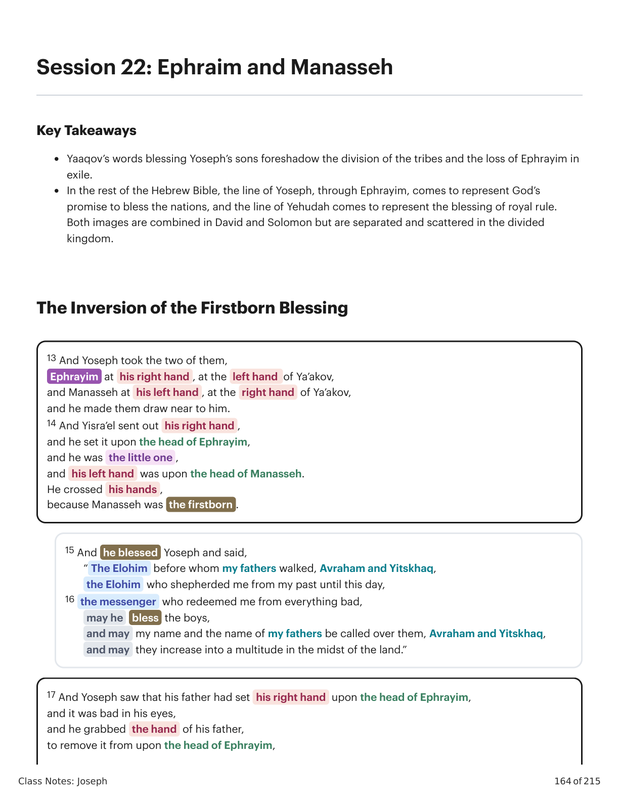
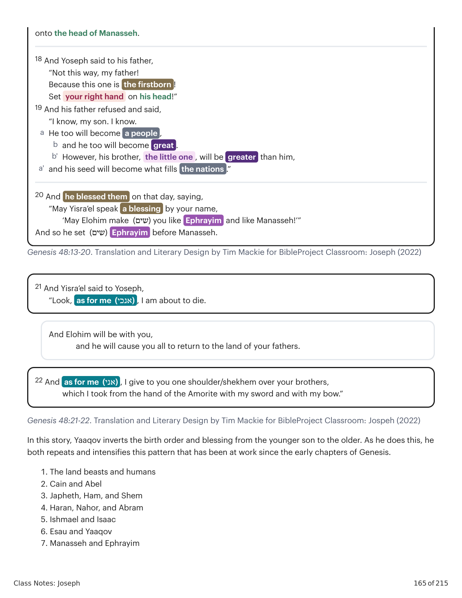
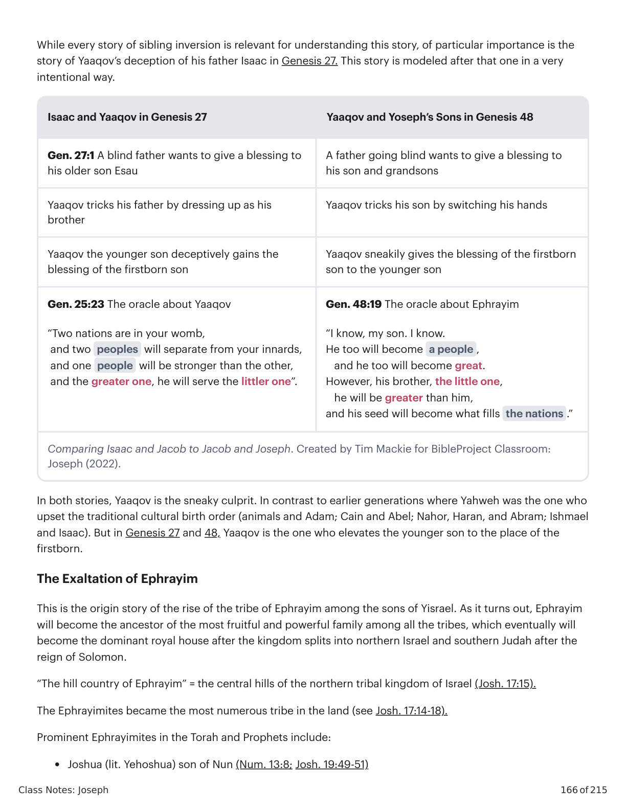
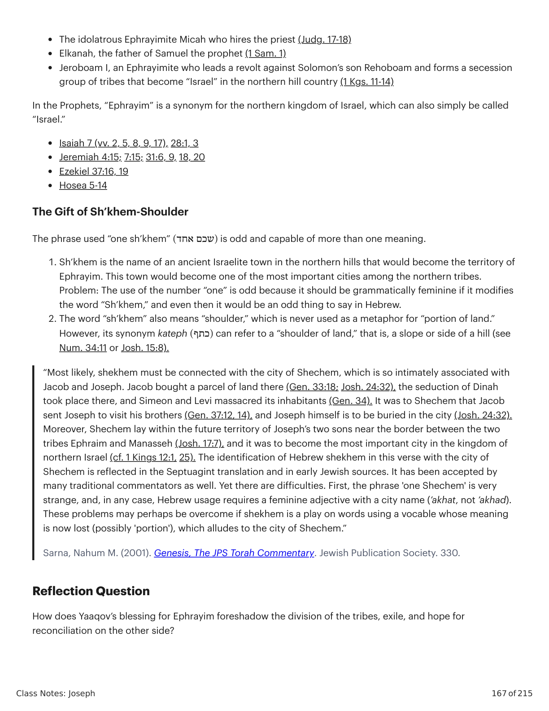

Efraim e ManassésEphraim and Manasseh
Class Notes: Joseph
164 of 215
Session 22: Ephraim and Manasseh
Key Takeaways
Yaaqov’s words blessing Yoseph’s sons foreshadow the division of the tribes and the loss of Ephrayim in
exile.
In the rest of the Hebrew Bible, the line of Yoseph, through Ephrayim, comes to represent God’s
promise to bless the nations, and the line of Yehudah comes to represent the blessing of royal rule.
Both images are combined in David and Solomon but are separated and scattered in the divided
kingdom.
The Inversion of the Firstborn Blessing
13 And Yoseph took the two of them,
Ephrayim at his right hand , at the left hand of Ya’akov,
and Manasseh at his left hand , at the right hand of Ya’akov,
and he made them draw near to him.
14 And Yisra’el sent out his right hand ,
and he set it upon the head of Ephrayim,
and he was the little one ,
and his left hand was upon the head of Manasseh.
He crossed his hands ,
because Manasseh was the firstborn .
15 And he blessed Yoseph and said,
“ The Elohim before whom my fathers walked, Avraham and Yitskhaq,
the Elohim who shepherded me from my past until this day,
16 the messenger who redeemed me from everything bad,
may he
bless the boys,
and may my name and the name of my fathers be called over them, Avraham and Yitskhaq,
and may they increase into a multitude in the midst of the land.”
17 And Yoseph saw that his father had set his right hand upon the head of Ephrayim,
and it was bad in his eyes,
and he grabbed the hand of his father,
to remove it from upon the head of Ephrayim,

Gênesis X:Y. Tradução e Design Literário por Tim Mackie para BibleProject Classroom: José (2021).Genesis X:Y. Translation and Literary Design by Tim Mackie for BibleProject Classroom: Joseph (2021).
Class Notes: Joseph
165 of 215
Genesis 48:13-20. Translation and Literary Design by Tim Mackie for BibleProject Classroom: Joseph (2022)
Genesis 48:21-22. Translation and Literary Design by Tim Mackie for BibleProject Classroom: Jospeh (2022)
In this story, Yaaqov inverts the birth order and blessing from the younger son to the older. As he does this, he
both repeats and intensifies this pattern that has been at work since the early chapters of Genesis.
1. The land beasts and humans
2. Cain and Abel
3. Japheth, Ham, and Shem
4. Haran, Nahor, and Abram
5. Ishmael and Isaac
6. Esau and Yaaqov
7. Manasseh and Ephrayim
onto the head of Manasseh.
18 And Yoseph said to his father,
“Not this way, my father!
Because this one is the firstborn !
Set your right hand on his head!”
19 And his father refused and said,
“I know, my son. I know.
He too will become a people ,
a
and he too will become great .
b
However, his brother, the little one , will be greater than him,
b'
and his seed will become what fills the nations .”
a'
20 And he blessed them on that day, saying,
“May Yisra’el speak a blessing by your name,
‘May Elohim make (שים) you like Ephrayim and like Manasseh!’”
And so he set (שים) Ephrayim before Manasseh.
21 And Yisra’el said to Yoseph,
“Look, as for me (אנכי) , I am about to die.
And Elohim will be with you,
and he will cause you all to return to the land of your fathers.
22 And as for me (אני) , I give to you one shoulder/shekhem over your brothers,
which I took from the hand of the Amorite with my sword and with my bow.”

Gênesis X:Y. Tradução e Design Literário por Tim Mackie para BibleProject Classroom: José (2021).Genesis X:Y. Translation and Literary Design by Tim Mackie for BibleProject Classroom: Joseph (2021).
Class Notes: Joseph
166 of 215
While every story of sibling inversion is relevant for understanding this story, of particular importance is the
story of Yaaqov’s deception of his father Isaac in Genesis 27. This story is modeled after that one in a very
intentional way.
Isaac and Yaaqov in Genesis 27
Yaaqov and Yoseph’s Sons in Genesis 48
Gen. 27:1 A blind father wants to give a blessing to
his older son Esau
A father going blind wants to give a blessing to
his son and grandsons
Yaaqov tricks his father by dressing up as his
brother
Yaaqov tricks his son by switching his hands
Yaaqov the younger son deceptively gains the
blessing of the firstborn son
Yaaqov sneakily gives the blessing of the firstborn
son to the younger son
Gen. 25:23 The oracle about Yaaqov
“Two nations are in your womb,
and two peoples will separate from your innards,
and one people will be stronger than the other,
and the greater one, he will serve the littler one”.
Gen. 48:19 The oracle about Ephrayim
“I know, my son. I know.
He too will become a people ,
and he too will become great.
However, his brother, the little one,
he will be greater than him,
and his seed will become what fills the nations .”
Comparing Isaac and Jacob to Jacob and Joseph. Created by Tim Mackie for BibleProject Classroom:
Joseph (2022).
In both stories, Yaaqov is the sneaky culprit. In contrast to earlier generations where Yahweh was the one who
upset the traditional cultural birth order (animals and Adam; Cain and Abel; Nahor, Haran, and Abram; Ishmael
and Isaac). But in Genesis 27 and 48, Yaaqov is the one who elevates the younger son to the place of the
firstborn.
The Exaltation of Ephrayim
This is the origin story of the rise of the tribe of Ephrayim among the sons of Yisrael. As it turns out, Ephrayim
will become the ancestor of the most fruitful and powerful family among all the tribes, which eventually will
become the dominant royal house after the kingdom splits into northern Israel and southern Judah after the
reign of Solomon.
“The hill country of Ephrayim” = the central hills of the northern tribal kingdom of Israel (Josh. 17:15).
The Ephrayimites became the most numerous tribe in the land (see Josh. 17:14-18).
Prominent Ephrayimites in the Torah and Prophets include:
Joshua (lit. Yehoshua) son of Nun (Num. 13:8; Josh. 19:49-51)

Gênesis X:Y. Tradução e Design Literário por Tim Mackie para BibleProject Classroom: José (2021).Genesis X:Y. Translation and Literary Design by Tim Mackie for BibleProject Classroom: Joseph (2021).
Class Notes: Joseph
167 of 215
The idolatrous Ephrayimite Micah who hires the priest (Judg. 17-18)
Elkanah, the father of Samuel the prophet (1 Sam. 1)
Jeroboam I, an Ephrayimite who leads a revolt against Solomon’s son Rehoboam and forms a secession
group of tribes that become “Israel” in the northern hill country (1 Kgs. 11-14)
In the Prophets, “Ephrayim” is a synonym for the northern kingdom of Israel, which can also simply be called
“Israel.”
Isaiah 7 (vv. 2, 5, 8, 9, 17), 28:1, 3
Jeremiah 4:15; 7:15; 31:6, 9, 18, 20
Ezekiel 37:16, 19
Hosea 5-14
The Gift of Sh’khem-Shoulder
The phrase used “one sh’khem” )(שכם אחד is odd and capable of more than one meaning.
1. Sh‘khem is the name of an ancient Israelite town in the northern hills that would become the territory of
Ephrayim. This town would become one of the most important cities among the northern tribes.
Problem: The use of the number “one” is odd because it should be grammatically feminine if it modifies
the word “Sh’khem,” and even then it would be an odd thing to say in Hebrew.
2. The word “sh’khem” also means “shoulder,” which is never used as a metaphor for “portion of land.”
However, its synonym kateph )(כתף can refer to a “shoulder of land,” that is, a slope or side of a hill (see
Num. 34:11 or Josh. 15:8).
“Most likely, shekhem must be connected with the city of Shechem, which is so intimately associated with
Jacob and Joseph. Jacob bought a parcel of land there (Gen. 33:18; Josh. 24:32), the seduction of Dinah
took place there, and Simeon and Levi massacred its inhabitants (Gen. 34). It was to Shechem that Jacob
sent Joseph to visit his brothers (Gen. 37:12, 14), and Joseph himself is to be buried in the city (Josh. 24:32).
Moreover, Shechem lay within the future territory of Joseph’s two sons near the border between the two
tribes Ephraim and Manasseh (Josh. 17:7), and it was to become the most important city in the kingdom of
northern Israel (cf. 1 Kings 12:1, 25). The identification of Hebrew shekhem in this verse with the city of
Shechem is reflected in the Septuagint translation and in early Jewish sources. It has been accepted by
many traditional commentators as well. Yet there are difficulties. First, the phrase 'one Shechem' is very
strange, and, in any case, Hebrew usage requires a feminine adjective with a city name (’akhat, not ’akhad).
These problems may perhaps be overcome if shekhem is a play on words using a vocable whose meaning
is now lost (possibly 'portion'), which alludes to the city of Shechem.”
Sarna, Nahum M. (2001). Genesis, The JPS Torah Commentary. Jewish Publication Society. 330.
Reflection Question
How does Yaaqov’s blessing for Ephrayim foreshadow the division of the tribes, exile, and hope for
reconciliation on the other side?

Gênesis X:Y. Tradução e Design Literário por Tim Mackie para BibleProject Classroom: José (2021).Genesis X:Y. Translation and Literary Design by Tim Mackie for BibleProject Classroom: Joseph (2021).